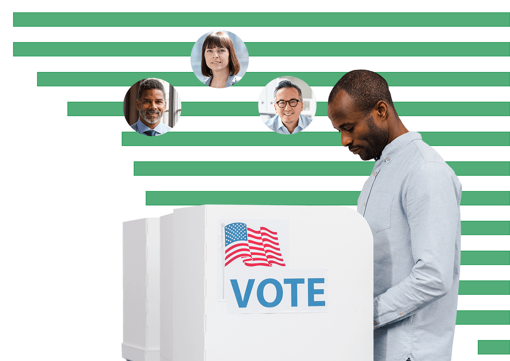
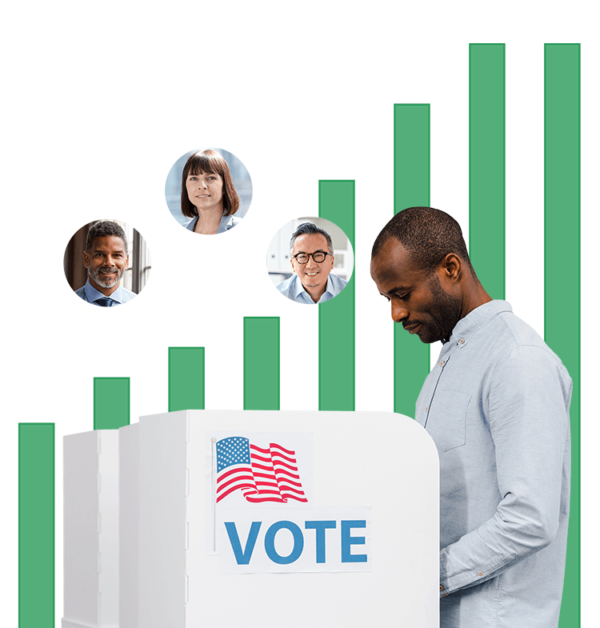

<div class="about_container">
  <div class="about">
    <h1>About Us</h1>
    <p class="about_caption">{{caption}}
    </p>
    <div class="orgs">
        <div>
          <a href="https://opensandiego.org/"></a>
          <p><a href="https://opensandiego.org/">Open San Diego</a> is a group of San Diegans who believe data and technology can better serve citizens, sparking a more vibrant democracy and civic life. We are a brigade of the national, non-partisan Code for America, leveraging their resources, but keenly focused on our improving local issues here at home.</p>
        </div>
        <div>
          <a href="https://represent.us/"></a>
          <p><a href="https://represent.us/">RepresentUs</a> brings together conservatives, progressives, and everyone in between to pass powerful anti-corruption laws that stop political bribery, end secret money, and fix our broken elections.</p>
        </div>
        <div>
          <a href="https://www.lwv.org/"></a>
          <p><a href="https://www.lwv.org/">The League of Women Voters</a> challenges all efforts and tactics that threaten our democracy and limit the ability of voters to exercise their right to vote.</p>
        </div>
        <div>
          <a href="https://www.commoncause.org/"></a>
          <p><a href="https://www.commoncause.org/">Common Cause</a> is made up of more than 1 million powerful, fearless, ordinary Americans working together to build a democracy that works for us all.</p>
        </div>
    </div>
    <div class="transparent">
      <div class="transparent_copy">
        <h1>We Fight for Transparency</h1>
        <p>Currently, campaign finance information for candidates running for local offices as well as money spent by outside groups to support or defeat them is not readily accessible to the public. When the amount of money being spent as well as the source is not known, voters feel disenfranchised by the election process. Making campaign finance data easy to find and read will increase public trust and confidence in the election process.</p>
     </div>
     <div class="transparent_photo">
      
     </div>
     <div class="transparent_photo_mobile">
      
     </div>
    </div>
  </div>
</div>
